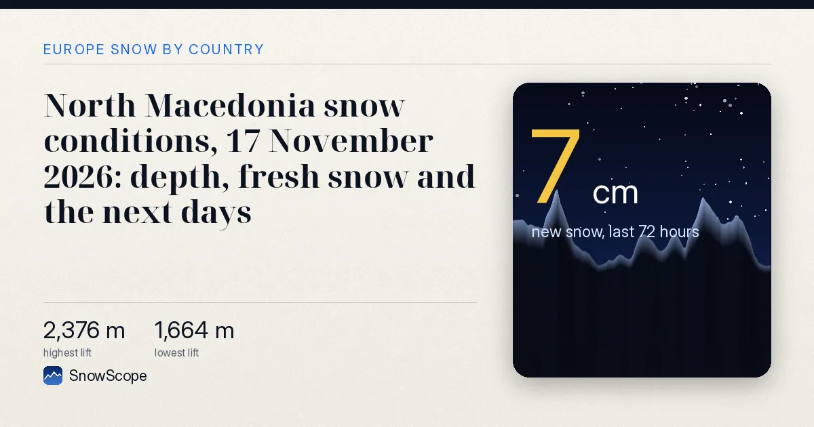

North Macedonia snow conditions, 17 November 2026: depth, fresh snow and the next days
50 km² of snow-covered ground in North Macedonia this Tuesday, down 110 km² on yesterday.
See the live snow forecast for Скијачки центар Попова шапка in the SnowScope appSnow depth, powder alerts and the 3D map, free.
Today's snow cover
Below about 2,400 m the slopes are mostly green or brown. That is close to the 10 km² of a week ago.
| Resort | Snow depth | New snow, 72 h | Coming, next days | Top |
|---|---|---|---|---|
| Скијачки центар Попова шапка | 0 cm | 7 cm | 4 cm | 2,376 m |
| Хотел Радика | 0 cm | 0 cm | 0 cm | 1,271 m |
| Kruševo | 0 cm | 0 cm | 0 cm | 1,406 m |

The latest snowfall
Hardly any new snow fell in the last three days: the three-day maximum is 1 cm.
On the ground
Mild weather is eating into the cover: expect firm snow in the morning and slush in the afternoon.
With more snow in the forecast, the next days should improve things further.
Snow depth by height
Climb and the snow gets deeper: between 2,000 and 2,500 m, under 1 cm on average, 11 % covered.
Shortlist for the weekend
The 8 resorts in North Macedonia on our map are still green.
Forecast for the week
Over the next three days up to 1 cm is expected, and up to 10 cm over the week.
The snowiest day looks like Monday 23 November, with up to 6 cm in the snowiest spots.
Tips for skiers
- Morning snow is firm after a clear night: wait for the sun on south faces.
- Snow above the tree line can be wind-packed: watch the ridges.
- Read the local avalanche bulletin before going off-piste.
About these numbers
Resort snow depths are the deepest snow on the resort's upper slopes from the SnowScope snow model (about 1 km, run of 17 November); they are estimates for an area, not a measurement at one point. Station values are measurements on the date shown. Forecasts can change. Always read the official avalanche bulletin before going off-piste.
Cite this report
For research, teaching or the press: the numbers and charts are free to reuse under CC BY 4.0 with this citation.
SnowScope (2026), North Macedonia snow conditions, 17 November 2026: depth, fresh snow and the next days, https://snowscope.app/blog/en/2026/11/north-macedonia-snow-report-17-november-2026.html, accessed 2026-11-17
SnowScope (Atlas Labs). (2026, November 17). North Macedonia snow conditions, 17 November 2026: depth, fresh snow and the next days. SnowScope snow reports. https://snowscope.app/blog/en/2026/11/north-macedonia-snow-report-17-november-2026.html
BibTeX
@misc{snowscope2026northmacedoniasnowreport,
author = {{SnowScope (Atlas Labs)}},
title = {North Macedonia snow conditions, 17 November 2026: depth, fresh snow and the next days},
year = {2026},
month = nov,
howpublished = {\url{https://snowscope.app/blog/en/2026/11/north-macedonia-snow-report-17-november-2026.html}},
note = {Published 2026-11-17 12:56 UTC; accessed 2026-11-17}
}· CC BY 4.0 · Methods, data and tools →
Скијачки центар Попова шапка: snow and temperature by height, this winter vs last (tools) →
Follow Скијачки центар Попова шапка
Free: a message when fresh snow is coming, and the forecast every morning.
More snow reports

Tornik on Zlatibor had up to 39 cm on its upper slopes on 15 November 2026; by Wednesday it had melted. Kopaonik barely turned white. The week day by day and what comes next.

Ten European ski resorts ranked for December value, led by Les 2 Alpes with 75 cm of mid-mountain snow.

Ski the 131 km of runs in the Forêt Blanche this December with a six-day pass for 298 EUR.